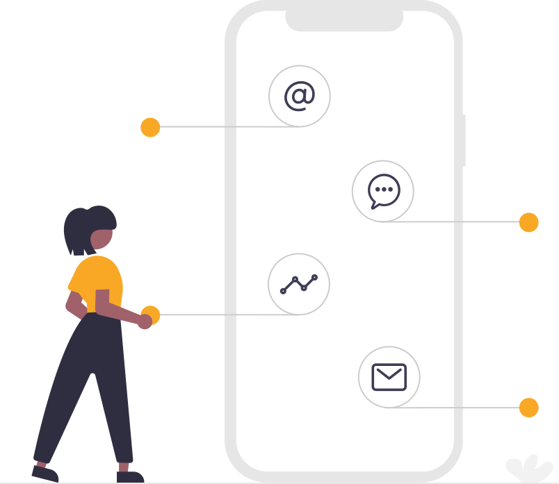

Diseño Gráfico (redes sociales, identidad, packaging) Desarrollamos la imagen de tu empresa, diseño gráfico a medida. Diseñamos todo el branding de tu empresa: logotipos, folletería, membretes, tarjetas personales, carteleria, revistas,
catálogos, etc

Estrategia, desarrollo y seguimiento de Campañas digitales. Para comenzar a planear tu estrategia de marketing en redes sociales, primero necesitas plantearte cuáles son tus objetivos. Cualquiera que sean las especificaciones de tus objetivos,
es importante tener un elemento diferenciador para colocarse como un referente en las mentes de tus consumidores. Si no tienes objetivos puntuales, te será muy difícil medir tu éxito.

Social media marketing: Combina los objetivos de mercadotecnia en Internet con medios sociales como foros web, blogs, revistas, agregadores de contenidos, sitios de intercambio de contenidos social y muchos otros.
